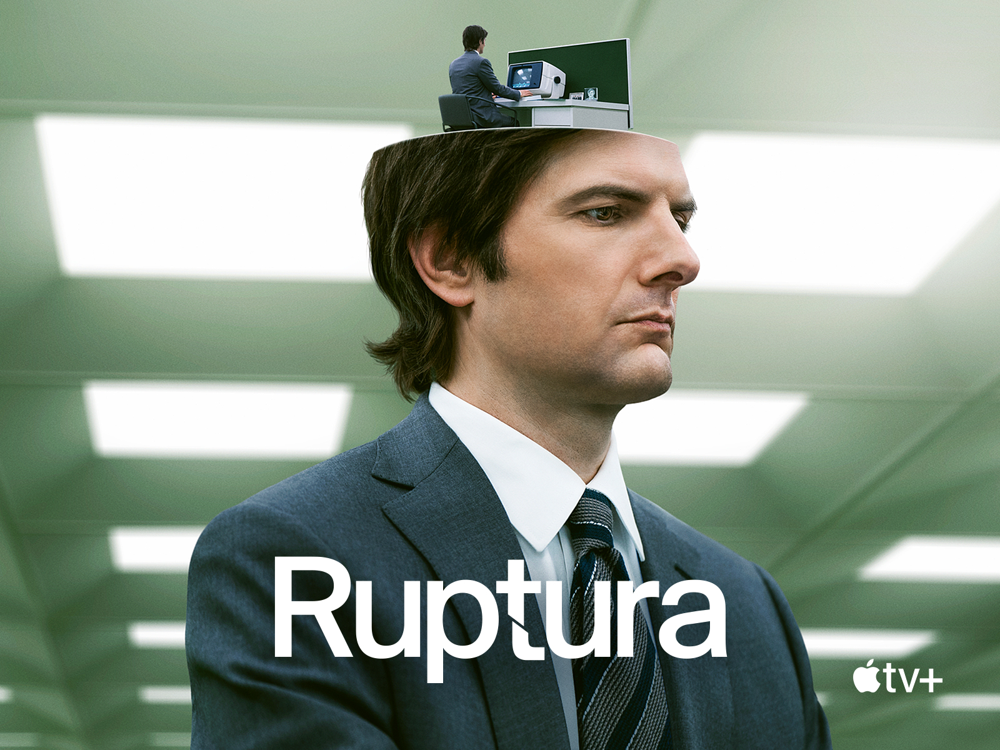

Ruptura (série de televisão)

Ruptura (Severance) é uma série de televisão estadunidense, dos gêneros thriller psicológico e ficção científica, criada por Dan Erickson e dirigida por Ben Stiller e Aoife McArdle. Ela é estrelada por Adam Scott, Zach Cherry, Britt Lower, Tramell Tillman, Jen Tullock, Dichen Lachman, Michael Chernus, John Turturro, Christopher Walken e Pataricia Arquette. A trama segue a vida de Mark (Scott), um funcionário das Indústrias Lumon que concorda em participar de um programa de "ruptura" no qual suas memórias sem relação com o trabalho são separadas de suas memórias com o trabalho.
A série estreou no serviço de streaming Apple TV+ em 18 de fevereiro de 2022. Desde seu lançamento, o show foi aclamado pela crítica e público, que elogiaram sua fotografia, o design de produção, a trilha sonora, história e performances (especialmente a de Scott). A série recebeu 14 indicações na 74.ª edição dos Prêmios Emmy do PrimeTime, incluindo a de Melhor Série de Drama e indicações pela atuação de Scott, Turturro, Walken e Arquette. Em abril de 2022, a série foi renovada para uma segunda temporada.
A segunda temporada estreou em 17 de janeiro de 2025. A continuação da série contará com um total de 10 episódios, que serão liberados semanalmente no serviço.
Premissa
As Indústrias Lumon, uma corporação de tecnologia, utiliza um procedimento médico de "ruptura" em alguns de seus funcionários que separa as memórias não relacionadas ao trabalho das duas memórias do trabalho. Mark, um funcionário que fez ruptura, começa a descobrir uma teia de conspiração de ambos os lados da divisão.
Elenco
Principal
- Adam Scott como Mark Scout
- Zach Cherry como Dylan George
- Britt Lower como Helly Riggs e Helena Eagan
- Tramell Tillman como Seth Milchick
- Jen Tullock como Devon Hale
- Dichen Lachman como Sra. Casey
- Michael Chernus como Ricken Hale
- John Turturro como Irving Bailiff
- Christopher Walken como Burt Goodman
- Patricia Arquette como Harmony Cobel
Recorrente
- Yul Vazquez como Peter "Petey" Kilmer
- Michael Cumpsty como Doug Graner
- Nikki M. James como Alexa
- Sydney Cole Alexander como Natalie
- Nora Dale como Gabby Arteta
- Claudia Robinson como Felicia
- Mark Kenneth Smaltz como Judd
Convidados
- Marc Geller como Kier Eagan
- Michael Siberry como Jame Eagan
- Joanne Kelly como Nina
- Cassidy Layton como June
- Ethan Flower como Angelo Arteta
- Karen Aldridge como Reghabi
Ben Stiller faz uma participação especial não-creditada como a voz de uma versão animada de Kier Eagan.
Episódios
| Temporada | Episódio | Exibição Original | |
|---|---|---|---|
| Início | Final | ||
| 1 | 9 | 18 de fevereiro de 2022 | 8 de abril de 2022 |
| 2 | 10 | 17 de janeiro de 2025 | 21 de março de 2025 |
1ª temporada (2022)
| N.º geral | N.º na temp. | Título | Dirigido por | Escrito por | Lançamento |
|---|---|---|---|---|---|
| 1 | 1 | "Boas notícias sobre o inferno" "(Good News About Hell)" |
Ben Stiller | Dan Erickson | 18 de fevereiro de 2022 |
| 2 | 2 | "Meia volta" "(Half Loop)" |
Ben Stiller | Dan Erickson | 18 de fevereiro de 2022 |
| 3 | 3 | "Na perpetuidade" "(In Perpetuity)" |
Ben Stiller | Andrew Colville | 25 de fevereiro de 2022 |
| 4 | 4 | "O você que você é" "(The You You Are)" |
Aoife McArdle | Kari Drake | 4 de março de 2022 |
| 5 | 5 | "A cruel barbárie da óptica e Design" "(The Grim Barbarity Of Optics and Design)" |
Aoife McArdle | Anna Ouyang Moench | 11 de março de 2022 |
| 6 | 6 | "Esconde-esconde" "(Hide and Seek)" |
Aoife McArdle | Amanda Overton | 18 de março de 2022 |
| 7 | 7 | "Jazz desafiador" "(Defiant Jazz)" |
Ben Stiller | Chris Black | 25 de março de 2022 |
| 8 | 8 | "O que tem pra jantar?" (What's for Dinner)" |
Ben Stiller | Helen Leigh | 1 de abril de 2022 |
| 9 | 9 | "O nós que nós somos" "(The We We Are)" |
Ben Stiller | Dan Erickson | 8 de abril de 2022 |
2ª temporada (2025)
| N.º geral | N.º na temp. | Título | Dirigido por | Escrito por | Lançamento |
|---|---|---|---|---|---|
| 10 | 1 | "Olá, senhora Cobel" "(Hello, Mrs. Cobel)" |
Ben Stiller | Dan Erickson | 17 de janeiro de 2025 |
| 11 | 2 | "Adeus, senhora Selvig" "(Goodbye, Mrs. Selvig)" |
Sam Donovan | Mohamad El Masri | 24 de janeiro de 2025 |
| 12 | 3 | "Quem está viva?" "(Who Is Alive?)" |
Ben Stiller | Wei-Ning Yu | 31 de janeiro de 2025 |
| 13 | 4 | "Vale da aflição" "(Woe's Hollow)" |
Ben Stiller | Anna Ouyang Moench | 7 de fevereiro de 2025 |
| 14 | 5 | "Cavalo de Troia" "(Trojan's Horse)" |
Sam Donovan | Megan Ritchie | 14 de fevereiro de 2025 |
| 15 | 6 | "Átila" "(Attila)" |
Uta Briesewitz | Erin Wagoner | 21 de fevereiro de 2025 |
| 16 | 7 | "Chikhai Bardo" | Jessica Lee Gagné | Dan Erickson, Mark Friedman | 28 de fevereiro de 2025 |
| 17 | 8 | "Doce vitríolo" "(Sweet Vitriol)" |
Ben Stiller | Adam Countee, K. C. Perry | 7 de março de 2025 |
| 18 | 9 | "Depois do expediente" "(The After Hours)" |
Uta Briesewitz | Dan Erickson | 14 de março de 2025 |
| 19 | 10 | "Cold Harbor" | Ben Stiller | Dan Erickson | 21 de março de 2025 |
Produção
Desenvolvimento
Ben Stiller leu o roteiro do episódio piloto aproximadamente cinco anos antes da estreia da série, chamando-o de "a coisa mais longa em que já trabalhei". O roteiro foi enviado por Dan Erickson como uma amostra para a produtora de Stiller, a Red Hour Productions, e foi encaminhado para Stiller através do executivo de desenvolvimentos Jackie Cohn. Stiller disse que gostou das contribuições da história para a comédia no local de trabalho. Em janeiro de 2017, Stiller convidou Adam Scott para participar do show. Em novembro de 2019, a Apple TV+ deu ordem de produção para Severance, com Stiller na direção e Scott no papel principal. Stiller foi contratado para dirigir somente o episódio piloto, no entanto ele decidiu dirigir vários outros episódios à medida que a série entrava em desenvolvimento.
Em janeiro de 2020, Patricia Arquette, Britt Lower, Jen Tullock e Zach Cherry foram anunciados no elenco. O ingresso de Tramell Tillman foi anunciado em fevereiro de 2020; e John Turturro e Christopher Walken foram adicionados em novembro de 2020. Dichen Lachman foi escalado em dezembro de 2020. Turturro disse que recomendou Walken para o papel de Burt porque o conhecia "há muito tempo e não preciso realmente agir como se fôssemos amigos". No dia 6 de abril de 2022, a Apple deu luz verde para a segunda temporada.
Uma grande variedade de mídias modernas serviram de influência para Severance incluindo a creepypasta conhecida como The Backrooms, o jogo eletrônico The Stanley Parable, e filmes como Brazil,The Truman Show e Eternal Sunshine of the Spotless Mind; bem como as histórias em quadrinhos de Dilbert. Algumas influências mais antigas incluem o inferno existencial presente na peça Entre quatro paredes de Jean-Paul Sartre e a distopia totalitarista descrita no romance 1984 de George Orwell.
Filmagens
A pandemia de COVID-19 adiou o início da produção, que seria em março de 2020. Desta forma, as filmagens da série começaram em outubro de 2020 em Nova York sob o título provisório de Tumwater. As filmagens terminaram em 23 de junho de 2021.
O designer de produção Jeremy Hindle combinou visuais corporativos das décadas de 1960, 1970 e 1980 para o visual distinto do show, e citou o arquiteto modernista Eero Saarinen como influente para o design do edifício. O criador e showrunner da série, Dan Erickson, disse que a mistura de carros e tecnologias de diferentes épocas tinha como objetivo "dar uma leve sensação de desorientação" e fazer a Lumon "sentir desamarrada do tempo e do espaço". Stiller disse que o mestre de adereços reconstruiu computadores antigos para que os atores pudessem realmente fazer o trabalho apresentado na série, para se ajustarem ao ambiente do escritório. Esses computadores não tinham uma tecla de escape (ESC), como uma metáfora para a falta de controle que os internos têm enquanto estão nos escritórios da Lumon.
A segunda temporada começou a ser filmada em 3 de outubro de 2022, na cidade de Nova York, e estava programada para terminar em 12 de maio de 2023. No entanto, em 8 de maio de 2023, a produção foi interrompida devido à greve do roteiristas em 2023. A produção foi retomada em 13 de maio de 2023, com as filmagens ocorrendo em Terra Nova, no Canadá. As filmagens foram interrompidas novamente devido à greve da SAG-AFTRA de 2023, mas foram retomadas em 29 de janeiro de 2024, e encerradas em 23 de abril de 2024.
Recepção
Severance foi recebida com aclamação da crítica após seu lançamento. No site agregador de avaliações Rotten Tomatoes, 97% das 72 avaliações dos críticos são positivas, com uma classificação média de 8,5/10. O consenso do site diz: "Audacioso, misterioso e trazendo uma nova visão sobre os perigos da labuta corporativa, Severance é o pacote completo". O Metacritic, que usa uma média ponderada, atribuiu uma pontuação de 83 de 100 com base em 30 críticos, indicando "aclamação universal".
Compilando as tradicionais listas de melhores do ano publicadas nos mais diversos sites, o próprio Metacritic apontou Severance como a melhor série de 2022, à frente de Better Call Saul e Andor.
Referências
Wikipedia
https://pt.wikipedia.org/wiki/Severance_(s%C3%A9rie_de_televis%C3%A3o)#2%C2%AA_temporada_(2025)